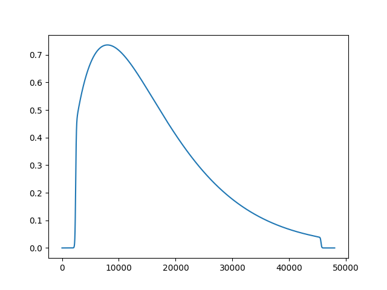
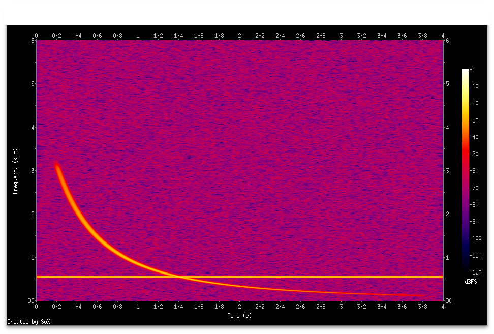
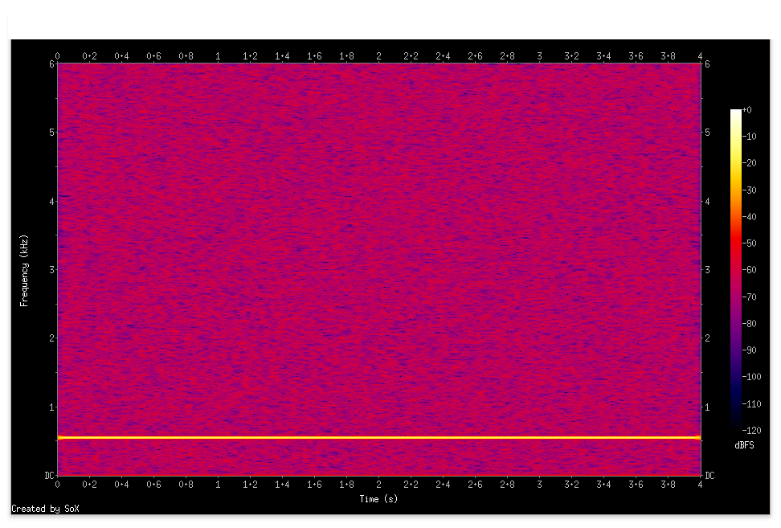
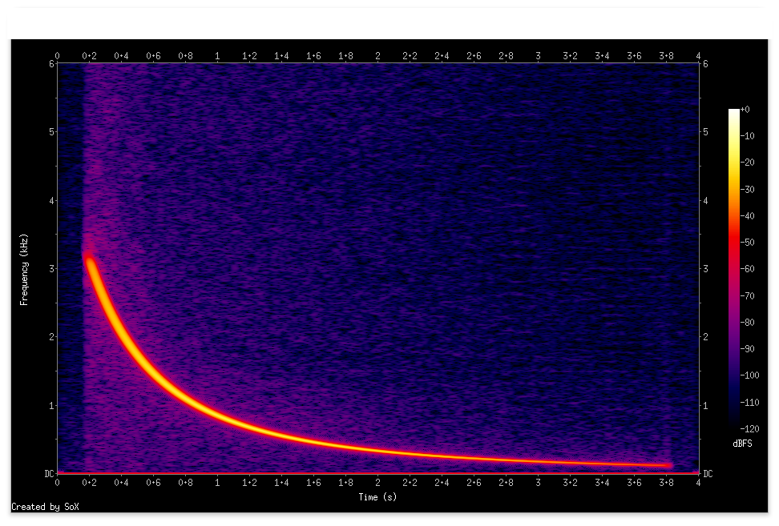
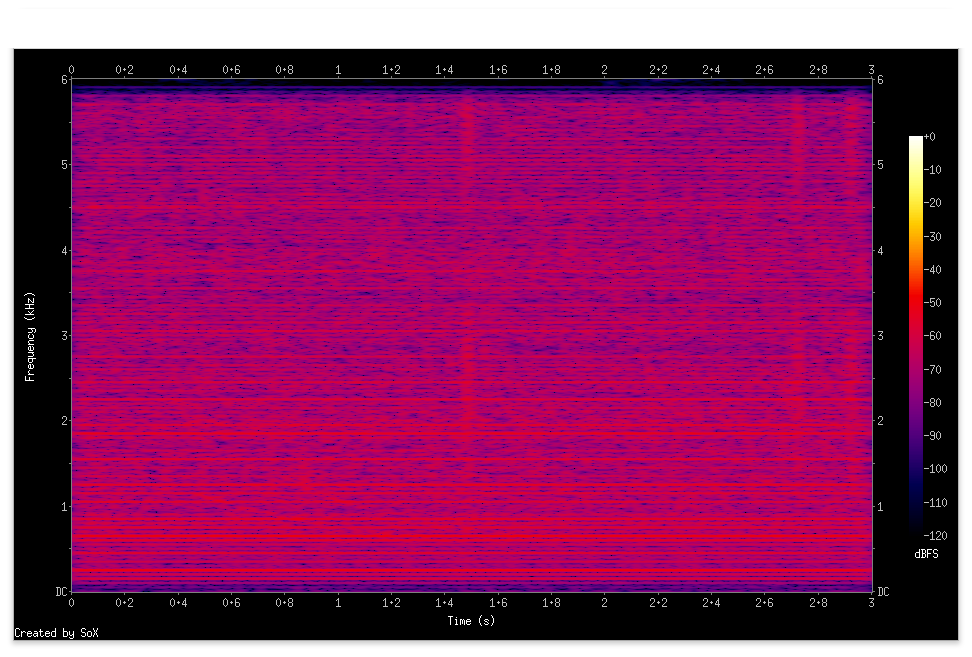
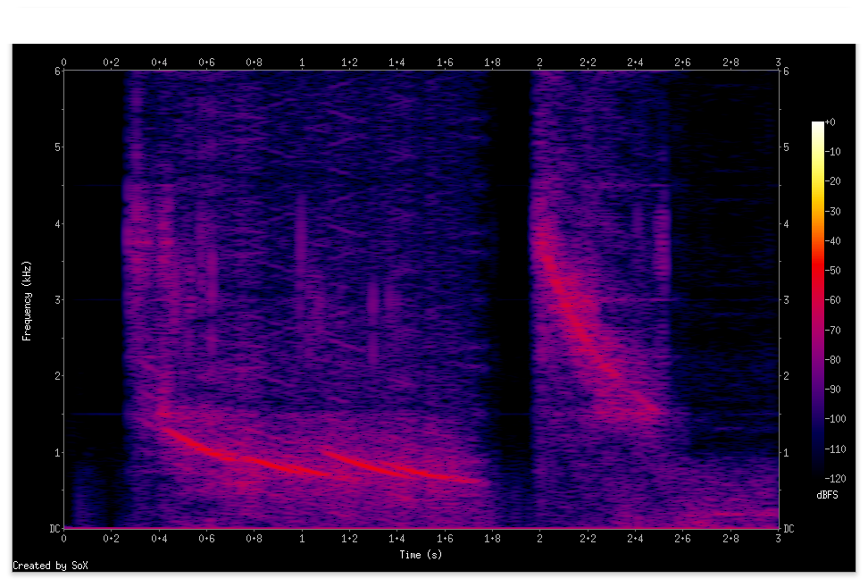
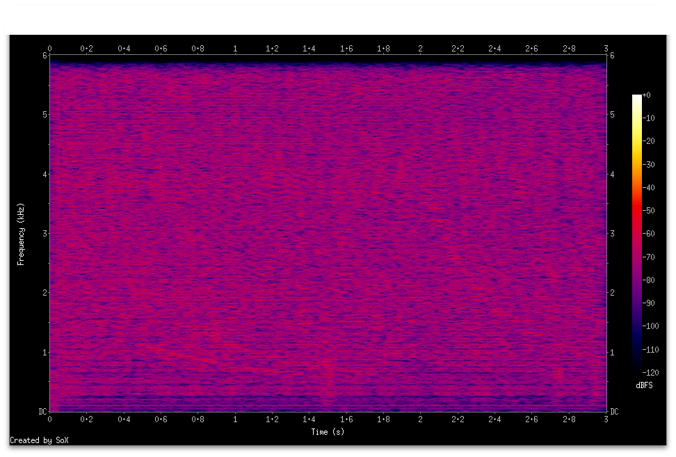

Conv-TasNet
Conv-TasNet は fully-convolutional time-domain audio separation network の略称で複数話者の混合した音声からそれぞれの話者の音声を分離する目的で作られたモデルです[1]
前節で STFT で frequency-domain へ変換し U-Net を適用する方法で目的信号を分離する実験を紹介しました
frequency-domain への変換を使った手法には入力信号の位相情報が損なわれるという困難があります
Conv-TasNet は time-domain での直接処理を行う小さなモデルであるにも関わらず音声のような長いタイムスパンに渡って依存性を持つ信号を位相情報を無視することなく扱うことができます
Conv-TasNet は
- 1d convolution による encoder
- dilation が指数的に増えていく複数レイヤをさらに何段かスタックした一種の TCN で話者毎のマスクを出力する separation module
- encoder 出力に separation module のマスク出力を適用
- 1d convolution による decoder
という構成で分離された各話者音声の予測を行います(詳細は[1])
ここでは pytorch 上の Conv-TasNet の実装[2] を使って試みたいくつかの実験結果を紹介します
簡単な信号の分離
実装[2] のデフォルトのハイパーパラメータによる Conv-TasNet で
- signal 1: 少しノイズを加えた 550hz の正弦波 4秒
- signal 2: 3khz 程度から周波数が下降していくwhistler 波を模擬した信号 4秒
を合成した信号を100 epoch 程学習して信号分離の様子をみてみました
fc = 550
ph_noise = np.random.normal(0, 0.01)
amb_noise = np.random.normal(0, 0.05, n_steps)
sig1 = np.sin(2*np.pi*fc*np.arange(0,t_step*n_steps,t_step)+ph_noise) + amb_noise
sig1 = 0.1*sig1/np.max(np.abs(sig1))
alpha = np.random.uniform(2350.0,2450.0)
t_start = np.random.uniform(0.65,0.725)
sig2 = np.sin(2*np.pi*alpha/np.arange(t_start,t_start+t_step*n_steps,t_step))
sig2 = 0.1*sig2*window
mix = (sig1 + sig2)
t_step と n_steps は次のように定義されています
sr = 12000
t_step = 1.0/sr
n_steps = 4*sr
また window は signal 2 の不要な部分を減衰させるための窓関数を表現するリストでこんな形をしています

このような (mix, sig1, sig2)を1000個生成し900個を学習に100個を検証に使いました
学習後に検証データの一つで合成信号とConv-TasNet で処理した信号を見ると

合成信号

話者1

話者2
という分離結果になりました
都市ノイズからの信号の分離
複雑な場合として Conv-TasNet で
- signal 1: 実際に観測した都市ノイズ信号 4秒
- signal 2: 3khz 程度から周波数が下降していくwhistler 波を模擬した信号 4秒
を学習してみました
この場合学習データをかなり増やさないと良い結果が得られない一方で学習の収束が悪くなる傾向がありました
試行錯誤の結果、単純なケースで得られたパラメータを必要なら学習率をリセットする形で複雑な学習データで再学習していくことで結果を改善できました
単純な場合と違い signal 2 の whistler 波のレベルは 1/100 程度と低くし、また時間方向へのある程度のオフセットを追加して時間方向でのバリエーションを与えています
この設定では学習データ数に対して検証データ数が少ないと結果が悪いところで終了していまいがちなので比を 3:1 にとっています
学習データ数 7500 検証データ数 2500 として学習後、これらのデータにはないノイズと実際の whistler 波を人工的に合成したデータで試した信号を見ると次のようになります
合成信号

話者1

話者2
同じ合成信号を信号を探して(3)で紹介した古典的な適応フィルタ NLMS でノイズリダクションした結果と比較するとその性質がより明らかかもしれません

NLMS
References
[1] Yi Luo, Nima Mesgarani, "Conv-TasNet: Surpassing Ideal Time-Frequency Magnitude Masking for Speech Separation"
[2] https://github.com/JusperLee/Conv-TasNet.git